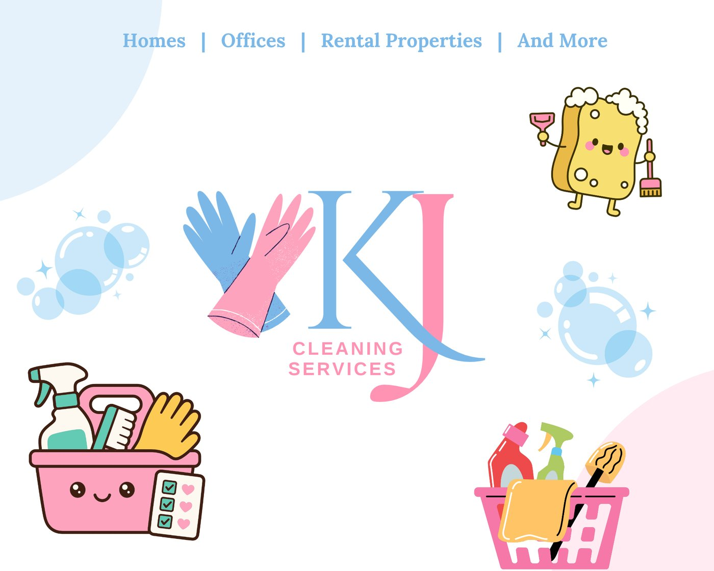

Brand Identity • Logo & brand graphic for a cleaning business
KJ Cleaning Services
A friendly, fresh brand look for a home and office cleaning service, using a soft pink and sky-blue palette.
StatusLocal Business
RoleDesigner
ToolsCanva
TypeBrand Identity
The Story
Behind the project
A cleaning company sells trust and that just-cleaned feeling. This design uses a soft, approachable palette and playful illustrations to make the brand feel welcoming rather than corporate.
Monogram markAn elegant serif "KJ" monogram paired with crossed cleaning gloves, with the J's tail sweeping like a cleaning stroke.
Fresh color storySky blue and pink communicate clean, fresh, and friendly.
Clear services"Homes | Offices | Rental Properties | And More" tells customers exactly what's offered.
PersonalityCute sponge, bubbles, and supply-caddy illustrations make the brand memorable and shareable.
the work
Gallery
Click any image to enlarge.

let's work together
Let's create something people remember. ♡
Have a project, internship, or opportunity? I'd love to hear about it.
Get in Touch LinkedIn